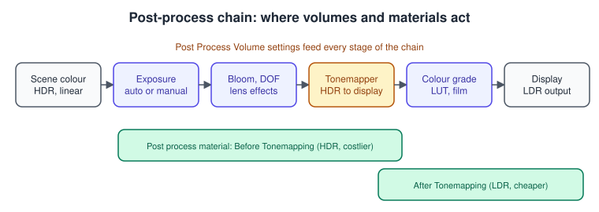
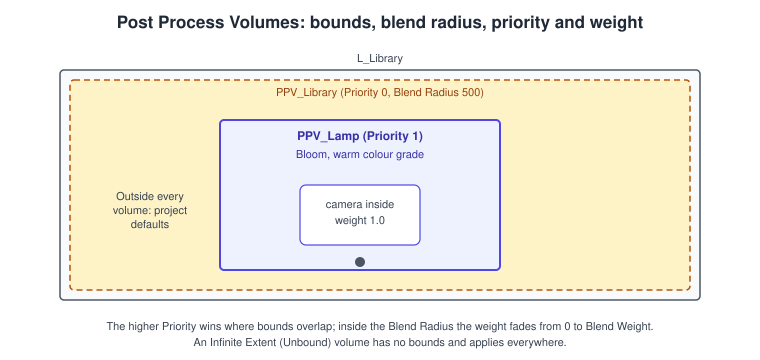
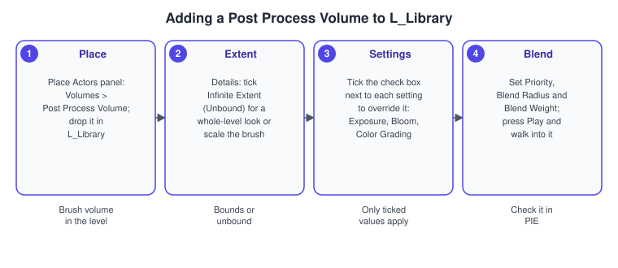
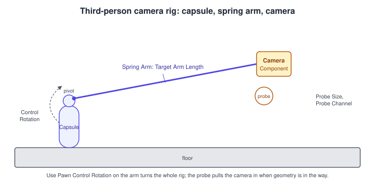

Post-Processing and Cameras
|
This content was generated with the assistance of AI and should be verified against the official documentation before being relied on in production. |
Two things decide how the Bookshelf looks on the player’s screen after the geometry, materials and lights are done: where the camera is and how it moves, and what the post-process stage does to the rendered image. Post-processing is everything applied to the finished frame: exposure, bloom, depth of field, colour grading and your own full-screen materials. The camera is the viewpoint those effects are applied to. In L_Library the third-person camera follows the player’s character, a Post Process Volume gives the room a warm, soft look around the desk lamp, and a short camera shake accents a book falling off the shelf.
The facts on this page were checked in November 2026 against the Unreal Engine 5.8 documentation (released 2026-06-17, latest hotfix found 5.8.4). Post Process Volumes work with the deferred renderer on desktop and console; some settings are not available with the mobile renderer, so for mobile targets read Android and Mobile. The engine-neutral background is in Transparency, Blending and Post-Processing and Color Spaces, HDR and Tone Mapping; Unity’s camera tooling is compared in Cameras and Cinemachine.
The post-process stage

After lighting and translucency, the renderer holds the scene colour in high dynamic range (HDR). The post-process stage runs a chain of passes over it: temporal anti-aliasing or upscaling, auto exposure, depth of field, bloom and lens effects, the tonemapper that compresses HDR into the display range, and finally colour grading. The parameters of every pass come from a single settings structure (FPostProcessSettings), and that structure can come from several places: the project’s defaults, any Post Process Volume the camera is inside, and the Camera Component itself. The renderer blends them by weight and priority.
Post Process Volumes
A Post Process Volume is a volume actor with a full copy of the post-process settings. You place one in the level, tick the settings you want to override, and the renderer applies them to any camera inside the volume.
| Property | Meaning |
|---|---|
Infinite Extent (Unbound) |
When enabled the volume has no bounds and affects the whole scene. Use one unbound volume for the baseline look of a level. |
Priority |
Decides which volume wins where volumes overlap: the higher value takes precedence for each setting both define. Equal priorities give an undefined result, so give overlapping volumes different values. |
Blend Radius |
A transition zone around the volume, in world units. Inside this distance from the volume’s bounds the effect fades in. |
Blend Weight |
The strength of the volume from 0 (no effect) to 1 (full effect). |
Enabled |
Switches the volume on or off without deleting it. |

Each setting inside a volume has a check box. An unticked setting is not overridden; the volume contributes nothing for it, so a lamp volume that only ticks Bloom and Color Grading leaves the exposure to the volume underneath. This is also why you should tick only what you need: every ticked setting is a decision you will have to remember when two volumes disagree.
The settings groups
The settings are grouped in the Details panel as follows.
| Group | What it controls |
|---|---|
Exposure and Local Exposure |
Overall brightness and local contrast. Metering Mode, Exposure Compensation and minimum and maximum brightness limits steer auto exposure. Local exposure lifts shadows and recovers highlights without a global change. |
Bloom |
The glow around bright lights and reflective surfaces: intensity, threshold and the convolution options. |
Color Grading and Film |
Global, shadows, midtones and highlights saturation, contrast, gamma, gain and offset, white balance, and the film tonemapper curve (slope, toe, shoulder, black and white clip). |
Lens |
Depth of Field, Bloom, Exposure, Chromatic Aberration, Dirt Mask, Camera (shutter speed, ISO, aperture, maximum aperture, diaphragm blade count), Lens Flares and Image Effects such as Vignette. |
Global Illumination and Reflections |
The Method drop-downs select the dynamic technique, for example Lumen. See Lighting, Lumen and MegaLights. |
Rendering Features |
Post Process Materials, Ambient Cubemap, Ambient Occlusion, Ray Tracing Ambient Occlusion, Motion Blur, Ray Tracing Translucency and Path Tracing. |
Film Grain |
Grain intensity and texture across shadows, midtones and highlights. |
Exposure deserves a special mention for the Bookshelf. A bright desk lamp in a dark room, with MegaLights shadows (see Lighting, Lumen and MegaLights), looks right only if auto exposure adapts: set a sensible exposure range and a modest Exposure Compensation in the room’s volume before adjusting the light intensities.
Procedure: a Post Process Volume for L_Library

-
Open
L_Library. In the Place Actors panel choose Volumes > Post Process Volume and drop it in the room. -
In the Details panel either enable Infinite Extent (Unbound) to affect the whole level, or scale the brush so that it covers the area where the look should apply.
-
Under Exposure, Bloom and Color Grading, tick the check box next to each setting you want to override and change its value (for example a slightly warmer Temp and a small Bloom Intensity).
-
Set Priority, Blend Radius and Blend Weight. Press Play and walk in and out of the volume to check the transition; look for exposure pumping at the edge, which means the blend radius is too small.
-
For a look that should change at runtime, keep a reference to the volume and edit its settings from code or Blueprint, as shown below.
Post process materials
A material whose Material Domain is Post Process can read the scene and write a new colour, which makes full-screen effects such as a damage overlay, an outline or a stylised look. You add it to a volume in Rendering Features > Post Process Materials (an array of blendables) or add it from code. The material’s Blendable Location decides where in the chain it runs:
| Blendable Location | Behaviour |
|---|---|
Before Tonemapping |
Runs on HDR scene colour. It fixes problems with temporal anti-aliasing and with reading the GBuffer (artifacts when using depth and normals), but costs more. |
After Tonemapping |
Runs on the LDR image, which needs less precision and bandwidth, so it is the cheaper default. A post process material that is not set otherwise is inserted at the end of the chain, after the tone mapper. |
Replacing the Tonemapper |
Takes the place of the tonemapper: input 0 is the HDR scene colour, input 1 the separate translucency (alpha is a mask) and input 2 the low-resolution bloom input. |
UE5 adds further locations that run earlier, around depth of field, and the locations after the upscaler run at the full output resolution when you use temporal super resolution. If the material changes colour, the choice matters because it decides whether your colour change happens before or after tonemapping. The Movie Render Graph’s post-process pass expects a material in the Post Process domain with After Tonemapping.
Cameras
A Camera Component (UCameraComponent) stores a viewpoint and its settings, and a Camera Actor (ACameraActor) is a wrapper that lets you place one directly in a level. The component’s main settings are the Projection Mode (perspective or orthographic), the Field Of View (for perspective cameras the documentation describes a vertical field of view; for orthographic ones a width in world units), the Aspect Ratio (with presets for common devices) and Post-Process Overrides, a copy of the post-process settings that applies when the camera is the view.
From the camera to the screen
Several objects cooperate to decide which viewpoint the renderer uses:
-
The Player Controller owns the player’s view and its control rotation.
-
The Player Camera Manager (
APlayerCameraManager) manages one player’s camera. It defines the final view properties the renderer needs, applies camera animation, shakes and modifiers, and can blend between cameras. A Blueprint subclass can implementBlueprintUpdateCameraand return true to apply its values. -
The View Target is the actor the manager takes its ideal viewpoint from. By default it is the possessed pawn, whose camera component supplies the view.
UpdateViewTargetqueries the view target, and the result is passed as anFMinimalViewInfostructure. -
Set View Target with Blend switches the view target, blending over a time, for example to a fixed camera in the library when the player sits at the desk.
Camera rig: spring arm and camera

The Third Person template follows a standard rig: a Spring Arm Component (USpringArmComponent) attached to the character, with a Camera Component attached to its end socket. The spring arm keeps the camera at a distance and pulls it closer when something is in the way. Its main properties are:
| Property | Effect |
|---|---|
Target Arm Length |
Natural distance of the camera from the arm’s pivot. |
Socket Offset, Target Offset |
Offset of the camera relative to the arm’s end (in the arm’s rotation) and offset of the pivot (in world space), used for an over-the-shoulder look. |
Do Collision Test, Probe Size, Probe Channel |
Whether the arm sweeps a sphere from the pivot to the camera; the sphere radius; and the collision channel it tests (see Chaos Physics and Collision). If the sweep hits, the camera moves in front of the obstacle. |
Use Pawn Control Rotation |
The arm rotates with the controller’s control rotation, so the mouse or stick turns the camera around the character. The camera component itself should then have this option off. |
Inherit Pitch, Inherit Yaw, Inherit Roll |
Which rotation axes of the parent the arm follows. |
Enable Camera Lag, Camera Lag Speed, Camera Rotation Lag, Camera Lag Max Distance |
Smooth the camera’s follow behind fast movement, and limit how far it may lag. |
The reasons for the sweep are practical: without it, standing with your back to the shelf puts the camera inside the shelf board. A probe sphere that is too large catches the floor in cramped rooms; one that is too small lets the camera clip into thin geometry. Put the camera on a channel that nothing else uses, or leave the default and change which actors block it.
Camera shake
A Camera Shake is a short motion added to the view by the player camera manager. Epic’s guide lists three pattern types that can be combined:
-
Perlin Noise: random points at a set amplitude and frequency, blended with a smoothing curve; good for high-intensity effects such as rumbles and near explosions.
-
Wave Oscillator (sinusoidal): smooth periodic motion for gentler effects such as a rocking boat; an Initial Offset Type chooses whether the wave starts at zero or at a random point.
-
Composite: layers Perlin, wave and sequence-based shakes.
Both noise types work on location, rotation and field of view. Amplitude sets the size of the movement and Frequency its speed; a duration of zero or less plays forever, and Blend In and Blend Out fade the start and end. Keep amplitudes small and let players reduce or disable shakes in the settings menu, because strong shakes can cause discomfort. APlayerCameraManager provides the static function PlayWorldCameraShake (the Play World Camera Shake node), which shakes every nearby camera with distance falloff, and the controller can start a shake for one player.
Source: Camera Shakes in Unreal Engine
Cine Camera
The Cine Camera Actor is Epic’s camera for cinematic work. It models a real camera: you set the focal length, filmback (sensor) preset, aperture and focus, and the field of view follows from the lens and the sensor rather than being typed in. Its field of view is documented as horizontal in the cinematic documentation, while the plain camera documentation describes a vertical one; read the property description before mixing the two. Cine cameras are what Sequencer and the Movie Render Graph use (see Sequencer Cinematics). In 5.8 the Cine Camera’s Sensor Aspect Ratio is no longer animatable, because it is derived from the sensor width and height.
Complete C++ examples for the Bookshelf
The examples live in the Bookshelf module (API macro BOOKSHELF_API, log category LogBookshelf). The first builds the camera rig of ABookshelfCharacter and plays a shake when it lands. The second edits a Post Process Volume at runtime and adds a post process material. The third moves the view to a fixed camera.
The character’s camera rig and a landing shake
// BookshelfCharacter.h
#pragma once
#include "CoreMinimal.h"
#include "GameFramework/Character.h"
#include "BookshelfCharacter.generated.h"
class UCameraComponent;
class UCameraShakeBase;
class USpringArmComponent;
UCLASS()
class BOOKSHELF_API ABookshelfCharacter : public ACharacter
{
GENERATED_BODY()
public:
ABookshelfCharacter();
virtual void Landed(const FHitResult& Hit) override;
protected:
UPROPERTY(VisibleAnywhere, BlueprintReadOnly, Category = "Camera")
TObjectPtr<USpringArmComponent> CameraBoom;
UPROPERTY(VisibleAnywhere, BlueprintReadOnly, Category = "Camera")
TObjectPtr<UCameraComponent> FollowCamera;
/** Shake asset played when the character lands; leave empty for none. */
UPROPERTY(EditDefaultsOnly, BlueprintReadOnly, Category = "Camera")
TSubclassOf<UCameraShakeBase> LandShake;
};// BookshelfCharacter.cpp
#include "BookshelfCharacter.h"
#include "Camera/CameraComponent.h"
#include "Camera/CameraShakeBase.h"
#include "Camera/PlayerCameraManager.h"
#include "GameFramework/PlayerController.h"
#include "GameFramework/SpringArmComponent.h"
ABookshelfCharacter::ABookshelfCharacter()
{
CameraBoom = CreateDefaultSubobject<USpringArmComponent>(TEXT("CameraBoom"));
CameraBoom->SetupAttachment(RootComponent);
CameraBoom->TargetArmLength = 400.0f;
CameraBoom->bUsePawnControlRotation = true;
CameraBoom->bDoCollisionTest = true;
CameraBoom->ProbeSize = 12.0f;
CameraBoom->bEnableCameraLag = true;
CameraBoom->CameraLagSpeed = 12.0f;
FollowCamera = CreateDefaultSubobject<UCameraComponent>(TEXT("FollowCamera"));
FollowCamera->SetupAttachment(CameraBoom, USpringArmComponent::SocketName);
// The arm already follows the control rotation; the camera must not rotate twice.
FollowCamera->bUsePawnControlRotation = false;
}
void ABookshelfCharacter::Landed(const FHitResult& Hit)
{
Super::Landed(Hit);
if (LandShake == nullptr)
{
return;
}
if (const APlayerController* PlayerController = Cast<APlayerController>(GetController()))
{
if (PlayerController->PlayerCameraManager != nullptr)
{
PlayerController->PlayerCameraManager->StartCameraShake(LandShake, 0.5f);
}
}
}In Blueprint the same rig is the Spring Arm and Camera components in the Components panel of the character Blueprint, and the shake is the Start Camera Shake node on the Player Camera Manager (or Play World Camera Shake for one in the world). Create the shake asset as a Blueprint class derived from the default camera shake, choose the Perlin or Wave pattern in its class defaults, and assign it to LandShake in the character Blueprint.
Editing a volume and adding a post process material at runtime
// BookshelfLookController.h
#pragma once
#include "CoreMinimal.h"
#include "GameFramework/Actor.h"
#include "BookshelfLookController.generated.h"
class APostProcessVolume;
class UMaterialInterface;
class UMaterialInstanceDynamic;
/** Drives the look of L_Library: bloom strength and a vignette-style overlay material. */
UCLASS()
class BOOKSHELF_API ABookshelfLookController : public AActor
{
GENERATED_BODY()
public:
ABookshelfLookController();
UFUNCTION(BlueprintCallable, Category = "Look")
void SetBloom(float Intensity);
protected:
virtual void BeginPlay() override;
/** The volume to drive; pick the one placed in L_Library. */
UPROPERTY(EditInstanceOnly, BlueprintReadOnly, Category = "Look")
TObjectPtr<APostProcessVolume> Volume;
/** A material in the Post Process domain, for example a screen tint. */
UPROPERTY(EditDefaultsOnly, BlueprintReadOnly, Category = "Look")
TObjectPtr<UMaterialInterface> OverlayMaterial;
UPROPERTY(Transient)
TObjectPtr<UMaterialInstanceDynamic> OverlayInstance;
};// BookshelfLookController.cpp
#include "BookshelfLookController.h"
#include "Engine/PostProcessVolume.h"
#include "Materials/MaterialInstanceDynamic.h"
DECLARE_LOG_CATEGORY_EXTERN(LogBookshelf, Log, All);
ABookshelfLookController::ABookshelfLookController()
{
PrimaryActorTick.bCanEverTick = false;
}
void ABookshelfLookController::BeginPlay()
{
Super::BeginPlay();
if (Volume == nullptr)
{
UE_LOG(LogBookshelf, Warning, TEXT("No Post Process Volume assigned to %s."), *GetName());
return;
}
if (OverlayMaterial != nullptr)
{
OverlayInstance = UMaterialInstanceDynamic::Create(OverlayMaterial, this);
Volume->Settings.AddBlendable(OverlayInstance, 1.0f);
}
}
void ABookshelfLookController::SetBloom(float Intensity)
{
if (Volume == nullptr)
{
return;
}
// A setting is applied only when its bOverride_ flag is true.
Volume->Settings.bOverride_BloomIntensity = true;
Volume->Settings.BloomIntensity = FMath::Clamp(Intensity, 0.0f, 8.0f);
}The bOverride_ flags are the check boxes of the Details panel in code form: every post-process setting has a bOverride_ twin that must be true for the value to apply. A dynamic material instance adds a draw-time parameter (for example an intensity you change from gameplay) and is the usual way to animate a post process material.
Switching the view to a fixed camera
// BookshelfPlayerController.h (excerpt)
UFUNCTION(BlueprintCallable, Category = "Camera")
void ViewFromDeskCamera(AActor* DeskCamera, float BlendTime = 1.0f);
// BookshelfPlayerController.cpp (excerpt)
void ABookshelfPlayerController::ViewFromDeskCamera(AActor* DeskCamera, float BlendTime)
{
if (DeskCamera != nullptr)
{
SetViewTargetWithBlend(DeskCamera, BlendTime, EViewTargetBlendFunction::VTBlend_Cubic);
}
}Source: Cameras in Unreal Engine
Calling SetViewTargetWithBlend with the pawn again returns the view to the character. The controller keeps possessing the pawn the whole time, so input stays with the character unless you also change the input mapping (see Enhanced Input).
Common mistakes
-
Leaving equal priorities on overlapping volumes. The result is undefined. Give them distinct priorities.
-
Ticking every setting in a volume. An unneeded override hides the volume underneath. Tick only what you intend to change.
-
A tiny Blend Radius. The change pops, and auto exposure may pump when the camera crosses the edge.
-
Forgetting
bOverride_in code. The value is assigned but ignored. -
Unbound volumes by accident. Infinite Extent (Unbound) affects the entire level; two unbound volumes with the same priority conflict.
-
Heavy post process materials before tonemapping. They run on HDR at full cost; use After Tonemapping unless you need HDR data.
-
Both the arm and the camera using pawn control rotation. The rotation is applied twice and the camera spins at double speed.
-
A probe size that is too big or the wrong channel. The camera jumps in tight rooms, or clips into thin walls.
-
Camera lag on a fast character. Without a Camera Lag Max Distance the camera falls behind and loses the character.
-
Strong shakes without an off switch. Always let players reduce them.
-
Mixing up the field of view axis. The plain camera and the Cine Camera describe different axes.
-
Ignoring the mobile renderer. Some settings and materials are not available there; test on the device.
Performance notes
-
Post-processing cost scales with the number of pixels. The upscaler lets the earlier passes run at a lower resolution; see Rendering Overview.
-
Disable passes you do not use (motion blur, ambient occlusion where Lumen replaces it, lens flares) in the volumes and in the scalability settings.
-
Prefer After Tonemapping post process materials, which work on LDR with lower bandwidth, and keep their texture reads few.
-
Depth of field is one of the more expensive effects; the Lens settings and Camera aperture control it. On mobile or low-end tiers disable it.
-
Keep the number of overlapping volumes small: each adds a blend to evaluate.
-
Use
stat gpuand the GPU profiler to see each pass (see Profiling and Optimization), andShowFlag.PostProcessing 0in the console to measure the stage as a whole. -
The spring arm’s collision sweep is cheap, but do not enable it on cameras that never need it.
What changed recently
| Version | Change |
|---|---|
UE 4.x to UE5 |
Post-processing remains the same volume-and-settings model. Lumen and Virtual Shadow Maps change which Global Illumination and Reflections methods are the defaults. |
UE 5.8 (2026-06-17) |
Cine Camera: the Sensor Aspect Ratio is no longer animatable. Camera Cut tracks with Keep State restore the correct view target on repeat playback. The Virtual Camera (VCam) gains an attach browser, constraints and per-axis attachment. The release notes also contain an Accumulation Depth of Field item. |
Source: Unreal Engine 5.8 Release Notes
See also
-
Rendering Overview: the frame in which the post-process stage runs.
-
Lighting, Lumen and MegaLights: exposure and the lamp.
-
Materials and the Material Editor: the Post Process material domain.
-
Gameplay Framework: the Player Controller, pawn and camera manager.
-
Sequencer Cinematics: Cine Cameras and camera cuts.
-
Chaos Physics and Collision: the channels the spring arm probes.
-
Transparency, Blending and Post-Processing and Color Spaces, HDR and Tone Mapping: the theory behind the stage.
-
Coordinate Spaces and Transforms: view and projection.
-
Cameras and Cinemachine: Unity’s camera system.